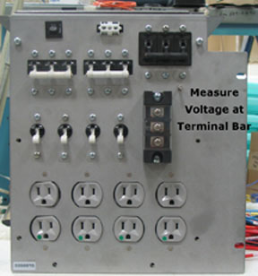

Illustration 7: PEN Cabinet Power Cable Connector (at Bottom of PEN Cabinet)

Table 4: Verify Energy Dissipated
| RF Portion of the PGR Cabinet | PEN Cabinet (including the magnet room electronics) |
| Measure the voltage at the power distribution module terminal board and confirm 0 volts. (See Illustration 6.) | Measure the voltage at the Power Distribution Module incoming AC connector and confirm 0 volts. (See Illustration 7.) |
Illustration 6: PGR Power Distribution Module Terminal Board

Illustration 7: PEN Cabinet Power Cable Connector (at Bottom of PEN Cabinet)
| NOTE: | The PHPS power switch LED (light emitting diode) is off when the voltage is dissipated. |